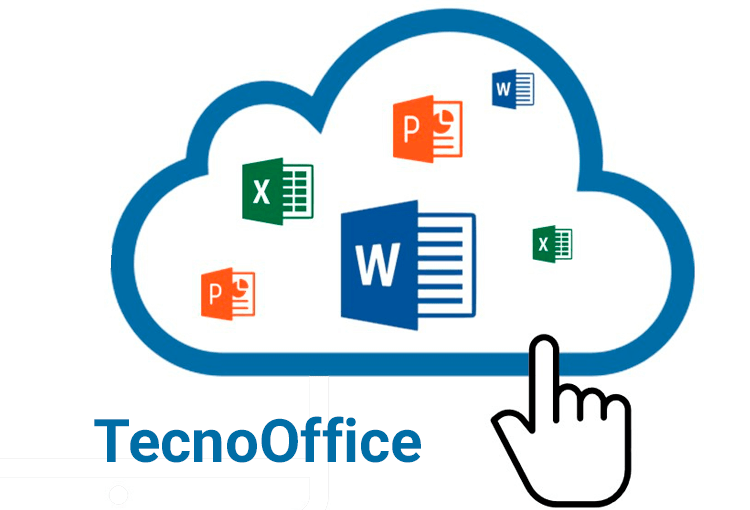

La ofimática (oficina + informática) es el conjunto de herramientas, técnicas y aplicaciones digitales que automatizan y optimizan las tareas administrativas y de gestión en una oficina, mejorando la productividad y eficiencia, e incluye desde procesadores de texto y hojas de cálculo hasta software de presentaciones, bases de datos y soluciones en la nube como Microsoft 365 y Google Workspace.
puedes crear y editar documentos, hojas de cálculo, presentaciones y bases de datos; gestionar información y archivos; automatizar tareas; y mejorar la comunicación y colaboración, usando herramientas como procesadores de texto (Word), hojas de cálculo (Excel), software de presentaciones (PowerPoint), correo electrónico y almacenamiento en la nube (Google Drive, OneDrive), agilizando enormemente las actividades de oficina y la productividad personal y empresarial.